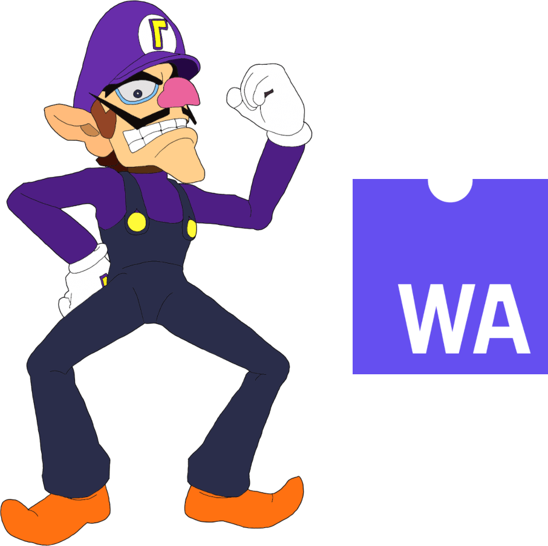

The Promise Of WebAssembly

There are some people out there who are really excited for WebAssembly (herein referred to as WASM).
Originally, I didn't see what the fuss was about. WASM, in its purest form, is a binary executable format for running code within a web browser. The potential benefits to using WASM over JavaScript, the lingua franca of the web, seem to be few. You might get better performance, but that's only for pure computation. As soon as you want to actually do something using a browser API, you have to cross the contextual barrier between WASM and JavaScript, as well as paying the cost for data serialization and deserialization. At least, that's the conventional wisdom. If you want to enjoy your performance boost, you have to limit your interaction with the browser as much as possible. I'm sure this will change as implementations improve and the WASM-browser interface expands.
Another advantage (or disadvantage, depending on who you ask) is that your code is passed onto users in a binary format. It can still be reverse-engineered, but not as readily as JavaScript which, even when minified or obfuscated, is still passed to the user in source format.
The biggest advantage in favor of WASM is that many languages, especially C, C++, and Rust, can target it. That means porting existing software to work on the web is suddenly much easier. But that seems like a pretty niche benefit, all things considered.
Write once, run anywhere
A lot of people more visionary than myself saw something more. Here's a binary executable format that can run almost anywhere by design, can run at almost native speed, and doesn't come with the baggage of everything else.
It's relatively simple to implement, too. If you have an hour and want to be gobsmacked, check out A Talk Near the Future of Python (a.k.a., Dave live-codes a WebAssembly Interpreter), the closing keynote from PyCon India 2019, where, just as the title promises, David Beazley writes a WASM interpreter in Python that runs fast enough to play a game written in Rust and compiled to WASM. There's no magic going on, either. I was able to follow it all the way through.
Thanks to these factors, the scene is now bursting with WASM runtimes for use outside of the context of web browsers. Wasmtime and Wasmer seem to be the leading choices at the moment, but I expect that to change.
WASM could deliver on Java's promise of "write once, run anywhere" but better. This is going to be controversial, but perhaps the biggest problem with the JVM is... Java! With WASM, you can more or less bring your own language. Plenty of languages can already target WASM.
Capability-based security
As far as WASM within the browser goes, there are arguments that WASM's inherent obfuscation could be a boon for malware writers. There have already been examples of web-based crypto miners in the wild. But there have been examples of this in JavaScript, too.
Once we step outside of the browser, things start to look at little brighter. Stand-alone WASM runtimes like those mentioned above implement a capability-based security system. If you want to run an untrusted WASM executable, the only resources the program has access to is CPU cycles and a limited amount of RAM. Doing anything more than that, like accessing the network or the file system, are opt-in settings. The APIs to access these resources from within a WASM program are such that a program can detect what resources it can access, meaning a program could theoretically still work without certain permissions, meaning it would be acceptable for a user to choose not to permit certain capabilities if the features those capabilities require are not needed.
The closest analogous feature most people are familiar with would be smart phone apps. You can still use the Slack app on your phone, for example, without permitting it to access your phone's microphone. You just won't be able to send voice notes or join huddles without it. But if you're cool with that, don't give the app those permissions. It'll still work just fine otherwise.
Universal scripting and plugin format
When it comes to allowing users to automate your application, you usually need to choose a scripting language. Lua is exceedingly easy to embed into an application. Python is a common choice because it's such a ubiquitous language. And there are tons of other options as well.
But what if you chose WASM as your scripting/plugin interface? That's exactly the question Extism solves.
Add Extism to your application, create and document whatever application API you want to expose to plugins, and off you go! It's a really clever solution. Your power users no longer have any excuses to complain about the language you chose for scripting. They can choose any language that compiles to WASM, which is almost all of the mainstream languages, and some more obscure choices to boot.
In an alternate universe, an alternative to Docker?
What got me thinking about this in the first place was this recent post on the Wasmer blog, written by Michael Bryan. It describes how to use WASM applications as Common Gateway Interface programs. This got me excited.
I enjoy programming. I don't enjoy system administration. That's why I prefer using services like NearlyFreeSpeech to develop my hobby web apps, as opposed to more full-fat solutions like AWS. I deploy websites like it's 1999. NearlyFreeSpeech gives you the ability to log in with a shell over SSH, or transfer files to your little cubby of their web server using SFTP. You can go all-out with modern web apps that are constantly running their own servers alongside the web server using FastCGI, etc. But for small apps without a ton of traffic, regular, old CGI still works just fine.1
CGI is cool because it's language-agnostic. Like WASM, bring your own language. But not all is cool with writing CGI scripts and programs. You might need to compile your program. Or you might need certain dependencies to be present on the server running your CGI program. That's where this gets tricky.
NearlyFreeSpeech runs a BSD on their servers.2 I don't run any BSDs locally. That means I'd have to build my CGI programs on their servers every time I make a change. Also, I'd have to bring my own dependencies, too, and build them if necessary. This sucks. I might like running my web apps like it's 1999, but I don't like building software in production.
Now imagine a service like NearlyFreeSpeech, but all CGI programs had to be WASM binaries that will get run via Wasmer (or similar). I think that's a really compelling vision.
It makes deployment easy. I would deploy my programs the same as static resources like web pages. Debugging would be easy since I could run the exact same executable from production on my local machine.
In my mind, I see this as an alternative to the popular Docker-based workflows that have proliferated. Most platforms have become container-friendly in the past few years. One of the most turn-key web app hosting solutions out there is indie darling fly.io. It's a compelling proposition for devs who don't want to also be devops. Although fly.io doesn't run Docker or Podman directly, they do use a file format that's mostly compatible with Dockerfiles.
As great as containers are, they're not a complete panacea for web development. You're still shipping an entire userspace with your application, with all of the complications and vulnerabilities that entails. I've also had container-based development bite me since I started using an M1 Mac at work. All our software is deployed in x86_64 containers. I can't just grab those and run them locally since my development machine is ARM-based.
With WASM, I don't have to worry about the differences between my development machine and the servers I deploy to.
A wild trend appears?
WASM isn't the only web tech that's being co-opted for non-web usage. I recently happened upon a resource called Learn WebGPU that surprised me by using the WebGPU interface outside of the browser. The author's reasoning makes sense to me.
I'm shocked by this trend. When I started my career, the world was still asking how to use desktop and server technologies inside the browser. The tables have turned and now everyone wants to benefit from the standardization, support, and ubiquity of web tech elsewhere in the computing landscape.
I feel like Doc Brown in Back To The Future: Part III.
Young Doc: No wonder this circuit failed. It says "Made in Japan".
Marty McFly: What do you mean, Doc? All the best stuff is made in Japan.
Young Doc: Unbelievable.